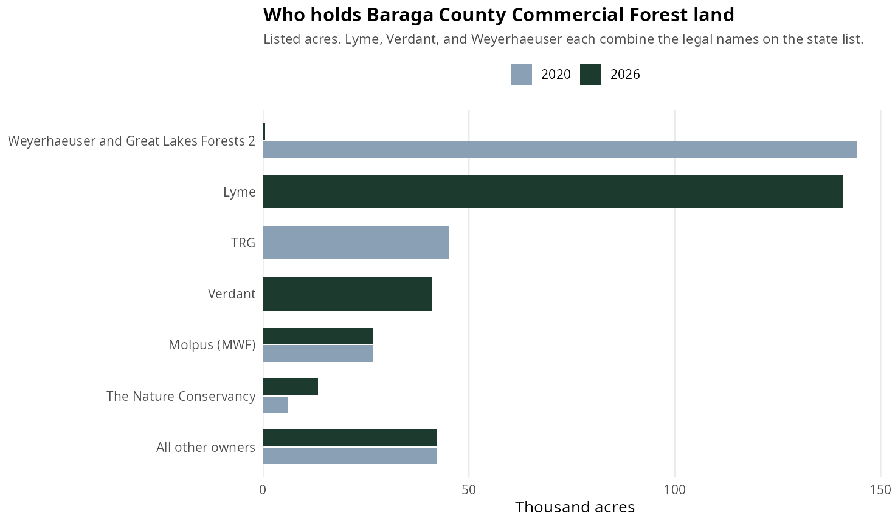
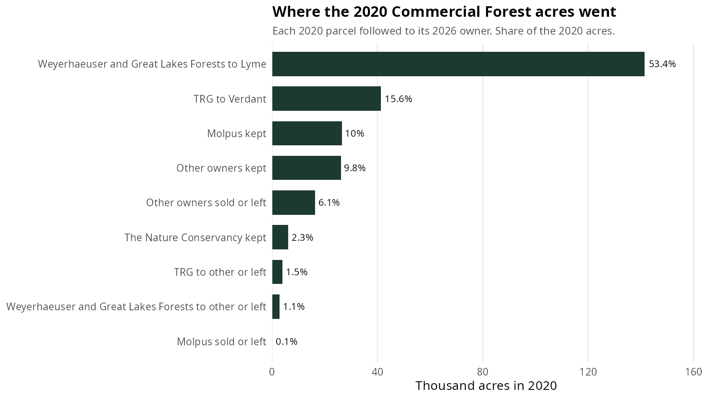
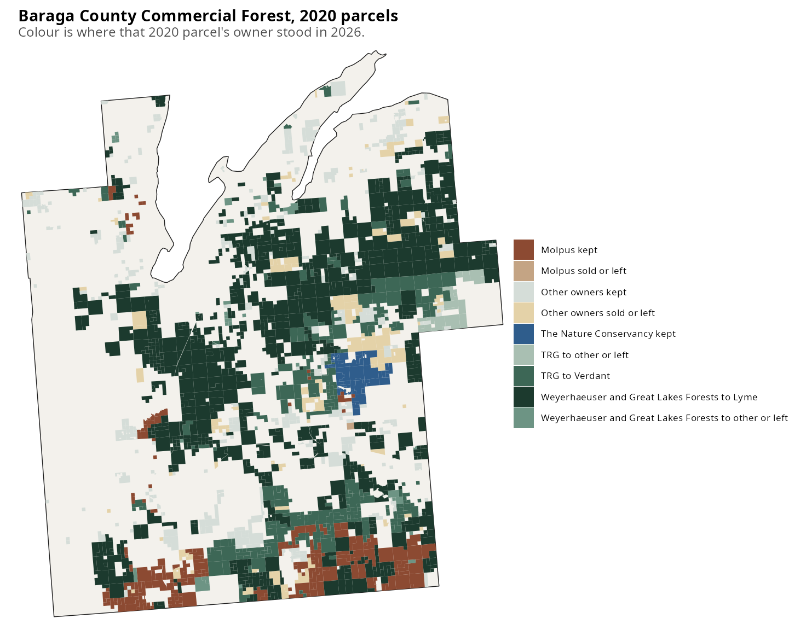
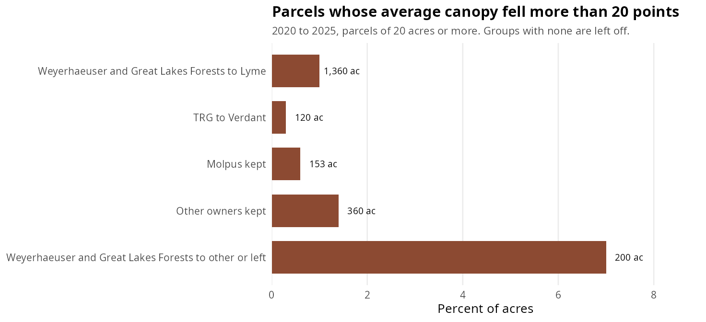
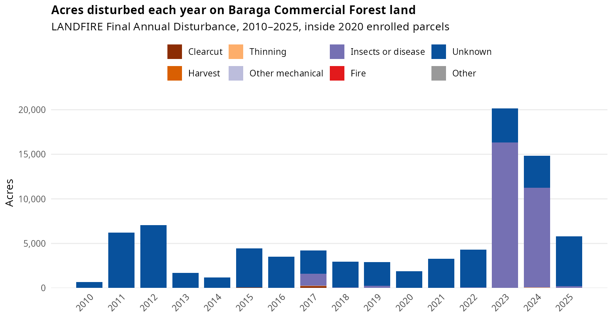
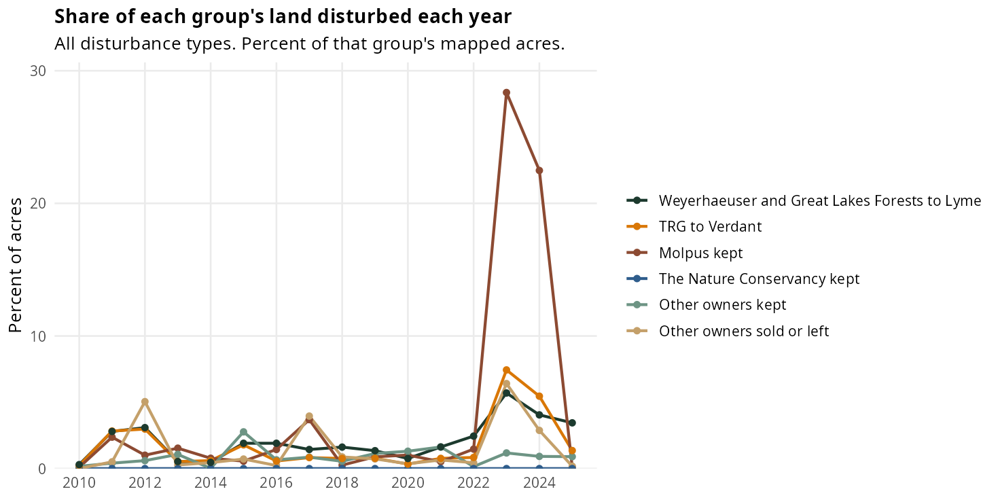

Michigan DNR Commercial Forest Program
Enrolled acreage barely changed. Most of it changed hands: Weyerhaeuser and Great Lakes Forests 2 sold to Lyme, and TRG sold to Verdant. Molpus stayed. Parcel-average canopy was almost flat.

In 2020, Weyerhaeuser and Great Lakes Forests 2 held 144,313 acres and TRG held 45,271. In 2026 Lyme holds 140,958 acres and Verdant holds 40,958 (Verdant Timber Michigan II 24,912, Verdant Timber Michigan 15,727, Verdant Timber Cub 320). Molpus (MWF Ned Lake) went from 26,760 acres to 26,604. The Nature Conservancy went from 6,182 to 13,301. Everyone else totals about 42,300 acres in both years. The state list codes Lyme Great Lakes Timberlands LLC as Private Individual(s) for 136,551 of those acres.

Each 2020 parcel was matched to a 2026 owner by parcel id (1,577 parcels), or, when the id was gone, to the 2026 owner covering at least half the parcel (47). Forty-five parcels, 2,917 acres, matched neither way and left the program. Of the Weyerhaeuser and Great Lakes Forests 2 land, 141,456 acres are now Lyme and 2,856 went elsewhere, including 440 acres still under the old names. Of the TRG land, 41,268 acres are now Verdant and 4,003 went elsewhere. One Molpus parcel, 157 acres, left that owner.


A parcel counts as heavily cut when its average tree canopy fell more than 20 points between 2020 and 2025, and it is at least 20 acres. That is 2,193 acres, 0.8 percent of the enrolled land with a canopy reading. The acre-weighted average change is a gain of 0.9 points. The 7 percent bar is 200 acres inside a 2,856-acre remainder, so the acres are small even where the share is higher. The Nature Conservancy’s 2020 land, the TRG remainder, the other owners who sold or left, and the one Molpus parcel that left had no parcels over the 20-point line.
Raw owner lists, with blank columns for carbon and easement notes, are in tables/owners_2020.csv and tables/owners_2026.csv. One row is one legal name and one state owner type. Lyme Great Lakes Timberlands LLC appears twice in 2026 because the state file gives it two types.

On the 2020 enrolled parcels, the annual totals add to about 85,100 acres, counting an acre again when it is disturbed in more than one year. Clearcut, harvest, and thinning together are 381 acres over the sixteen years, and no fire was mapped. The rest is coded Unknown or Insects. Unknown is a satellite change that did not fall on a mapped harvest, fire, or insect event, and most of it is low severity. Insects account for the 2023 and 2024 spike: 16,300 acres in 2023 and 11,200 in 2024. Nearly all of the 2023 insect acres are a low-severity event polygon, and about 9,000 of the 2024 insect acres had no detected image change. That fits the canopy result, which barely moved.

Molpus land carries the insect years: 28 percent of it in 2023 and 22 percent in 2024. The land that went from Weyerhaeuser and Great Lakes Forests 2 to Lyme was about 6 percent in 2023, and the land that went from TRG to Verdant about 7 percent. The Nature Conservancy’s 2020 parcels sit near zero in both years.